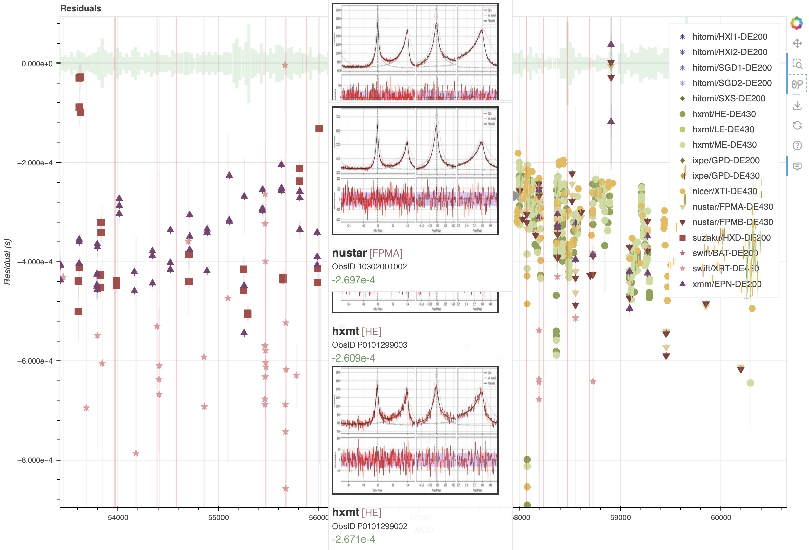

TOA Extractor¶
This software was produced in the framework of the International Astronomical Consortium for High Energy Calibration (IACHEC). By observing the same pulsar(s) with multiple instruments, we can measure their timing performance, and in particular their absolute alignment to Universal Time (UT) and their stability over time. TOA Extractor allows to perform a standard timing analysis on X-ray data, creating a rich database of X-ray Times of Arrival (TOAs) that can be used at this scope. Our current calibrator source is the Crab, for principally two reasons:
it is monitored by all missions regularly for spectral calibration;
the Jodrell Bank radio telescope regularly publishes a monthly ephemeris of the Crab pulsar since 1987 [[CHECK]]
There are a few drawbacks of this approach:
The monthly ephemeris, for consistency, uses a timing solution obtained by using a constant source position and the same JPL ephemeris, which is now quite outdated (DE 200). X-ray astronomers today use more modern ephemerides, and it is not straightforward to use the monthly ephemeris to fold the pulsar.
The Crab pulsar is very bright, which is advantageous to obtain TOAs quickly, but it severely impacts the analysis with some detectors due to pile up, dead time and other instrumental effects.
This pulsar is slow and unstable compared to others, with frequent “glitches” (sudden changes of the rotational speed) and changes in the delay the radio signal accumulates due to a varying amount of neutral gas traversed by the radio waves.
TOA Extractor solves the first bullet point and, in part, the second. To accommodate different JPL ephemerides and source position, we refit the JB ephemeris to the new parameters using simulated data (see below). The code also contains methods to correct the pulse profile from dead time (using the information on prior livetime shared by some missions) and pile-up (at the moment, it is only applied to Chandra-HRC data). Future work will address the third point by adding other pulsars to the calibrators.
How to use the code¶
The starting point are photon event lists that have been preprocessed by the instrument teams and “barycentered” – had their time measurements referred to the UT at the Solar System Barycenter (SSB) and not to the local time at the satellite. One can “fold” an observation to obtain the average pulse profile, fit the pulse profile with a combination of symmetric and asymmetric lines, and calculate the TOA (the arrival time of the peak of the pulsation) and the difference compared to the reference model by simply executing the command:
$ toaextract path_to_file_name.fits
This will go through different steps, each of whom will produce one or more files with diagnostic data and plots like the one below. Long observations, or observations containing a large number of photons, will be split in shorter segments producing multiple diagnostic plots and TOAs. If everything goes smoothly, the results will be written in files ending by *results_*.yaml.
{kind=link}
Results from all processed files can be gathered by executing:
$ toasummary *results*.yaml
This will produce an CSV table (summary_*.csv) with all the results. Finally, one can execute:
$ toaplot summary.csv
which will produce an html file with an interactive plot of the results. The plot can be opened with any browser, zoomed in and out, and for each observation there will be a diagnostic plot popping out when the user hovers with the pointer on top of the corresponding point in the plot.
{kind=link}
Calculate residuals of Crab TOAs from inconsistent processing¶
Let us consider the Suzaku observation of the Crab performed at MJD 56000, and say we want to calculate the arrival time of the X-ray peak compared to the radio peak. We could in principle use the solution listed above to fold the data and calculate a TOA. However, we realize we barycentered the data using the DE421 solar system ephemeris, and using the most recent position of the source considering proper motion, while our reference ephemeris from Jodrell Bank uses DE200 and ignores proper motion. This might lead to a timing error up to a few ms, which is far larger than the needed precision for our TOA. Instead of re-barycentering the data using DE200 and a different position, we can do the following:
We simulate a set of infinite-frequency TOAs at the geocenter using the timing solution above;
Since the difference between TOAs at the geocenter using different ephemerides is tiny compared to the TOAs at the SSB, we assume these same TOAs remain the same using the DE421 ephemeris;
we fit a new timing solution to these TOAs, using the DE421 ephemeris and the same position used for barycentering the X-ray data;
we verify that the scatter of the TOAs with the new solution is much smaller than the declared rms scatter of the JBE;
At this point, we have a new timing solution that is consistent with the JBE, but using the DE421 ephemeris.
This procedure can easily be done using the PINT (Luo et al. 2021) software package, that supports a large set of timing models and JPL ephemerides.
The solution can be saved in a TEMPO2-format parameter file, containing all the relevant information.
The geocenter arrival time should be encoded in the TZRMJD key, using texttt{0} as observatory.
The quality of the correction can be seen in Figure [[TBD]].